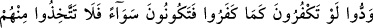
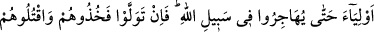
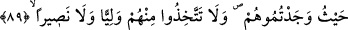

(daldırılırlar). Eğer sizden uzak durmaz, sulh teklif etmez ve ellerini çekmezlerse
onları yakalayın, rastladığınız yerde öldürün. İşte onlar üzerine sizin için apaçık
yetki verdik.
Ey mü’minler, “size ne oldu da münâfıklar hakkında iki gruba ayrıldınız?” burada
mü’minlerin tamâmı değil, bir kısmı kastedilmektedir. Âyette muhâtap olan münâfıkların
durumları hakkında birbiriyle olan ihtilaflarını haklı çıkaracak herhangi bir şeyin
olabileceği reddedilmekte; münâfıkların kesin olarak kâfir olduklarına hükmetmenin ve
bütün hükümlerde onlara, küfürlerini açığa vuran kâfirler gibi davranılması gerektiği
beyân edilmektedir.
Rivâyete göre bâzı münâfıklar, Medîne’nin havasının kendilerine iyi gelmediğini ileri
sürerek Rasûlullah (s.a.v.)’den çöle çıkmak için izin istediler. Çöle çıkınca da konak
konak gide gide sonunda Mekke’de müşriklere katıldılar. Müslümanlar ise onların
durumu hakkında ihtilâfa düştüler. Bâzısı onların kâfir, bâzısı da müslüman olduklarını
söylediler. Bunun üzerine Allah Teâlâ bu âyeti indirdi.
“Halbuki Allah onları” dinden dönme, müşriklere katılma, Rasûlullah (s.a.v)’e hile
yapmaları sebebiyle “kendi ettikleri yüzünden baş aşağı etmiştir.” Allah Teâlâ onları
küfür ve küfrün hükümlerinden olan; zelillik, küçüklük, esirlik ve ölüm gibi durumlara
döndürmüştür. Ey o münâfıkların mü’min olduklarını söyleyen ihlaslı kimseler!
“Allah’ın saptırdığını doğru yola getirmek mi istiyorsunuz?” Yâni onu hidayete eren
kimselerden mi kılmak istiyorsunuz?! Burada münâfıkların hidâyette olduğunu iddiâ
eden mü’minler kınanmakta ve bunun kişiyi, Allah’ın saptırdığı kimseyi hidâyete
erdirmek gibi bir muhâle götüreceği bildirilmektedir. Çünkü münâfıklar, îmân ve
hidâyetten çok uzak oldukları halde mü’min olduklarına hükmetmek ve doğru yolda
bulunduklarını iddiâ etmek, onların hidâyetine çalışmak demektir. Bu ise boşuna bir
çabadır.
Kim olursa olsun “Allah’ın saptırdığı” hakkında sapıklık takdir ettiği “kimse için”
doğru yolu göstermek şöyle dursun herhangi “aslâ yol bulamazsın.” Muhataplardan her
birine hitabın yapılmış olması, ayrı ayrı herkese yol bulamamanın şâmil olduğunu
hissettirmek içindir.
89- Sizin de kendileri gibi inkâr etmenizi istediler ki onlarla eşit olasınız. O halde